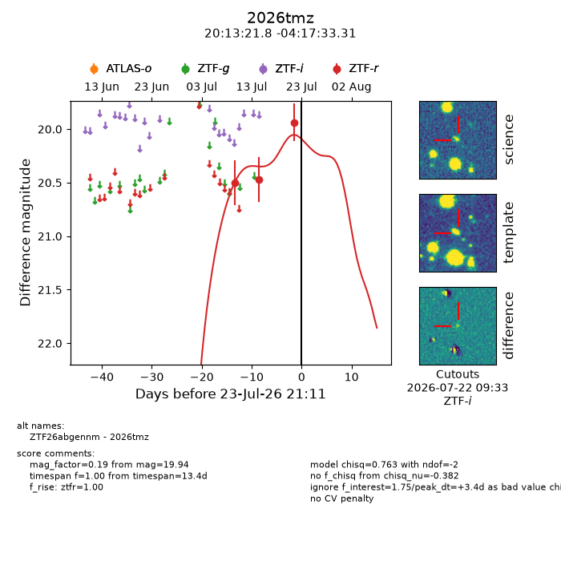
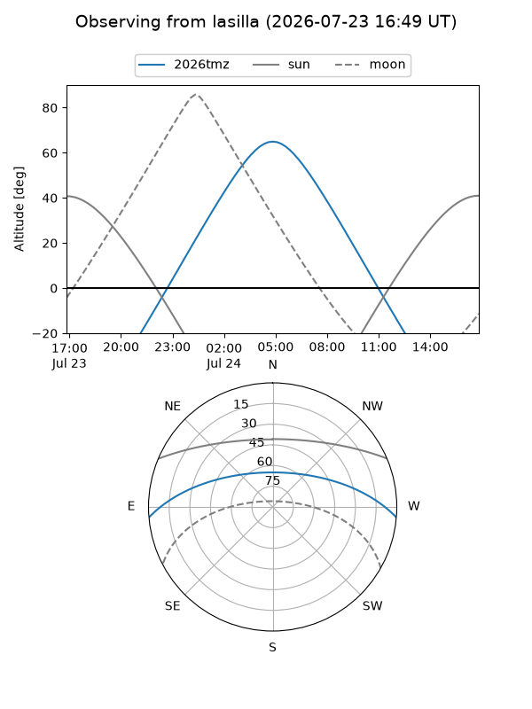
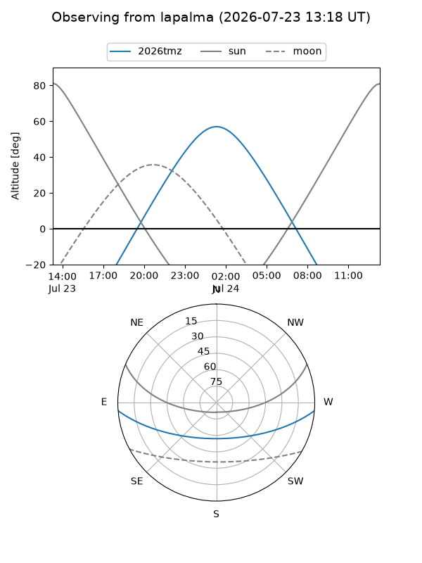
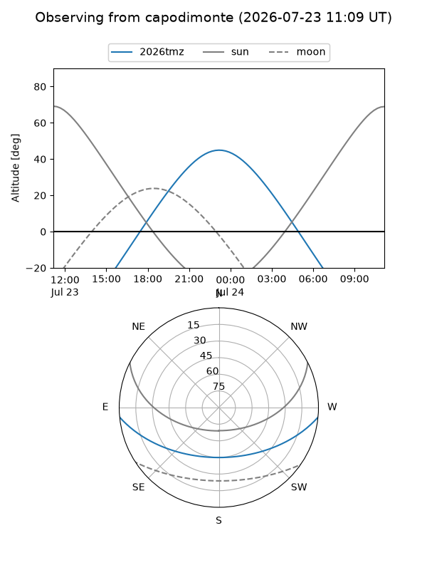
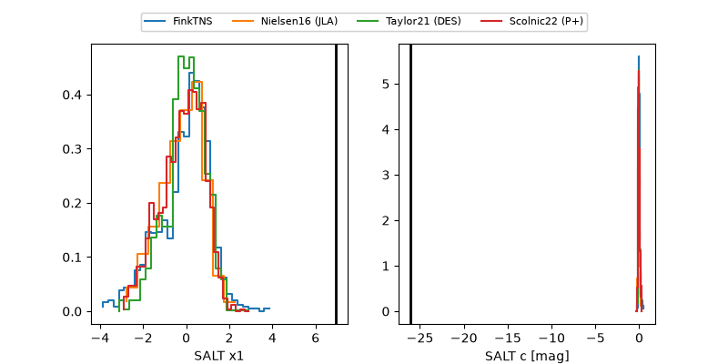

2026tmz
Target 2026tmz at 2026-07-23 21:14
Aliases and brokers:
FINK-ZTF: ztf.fink-portal.org/ZTF26abgennm
Lasair-ZTF: lasair-ztf.lsst.ac.uk/objects/ZTF26abgennm
ALeRCE-ZTF: alerce.online/object/ZTF26abgennm
YSE-PZ: ziggy.ucolick.org/yse/transient_detail/2026tmz
TNS name: wis-tns.org/object/2026tmz
Direct TNS query: direct search
alt names
ZTF26abgennm (ztf,fink_ztf)
2026tmz (tns,yse)
Coordinates:
equatorial (ra, dec) = 303.3408,-4.29259
equatorial (HMS+DMS) = 20:13:21.78,-04:17:33.31
galactic (l, b) = (38.5861,-20.16132)
Flags:
TNS type: nan
peak dt: +3.4
Photometry:
last ztfr=19.94
3 ztfr detections
Lightcurve

Visibility



Additional plots
